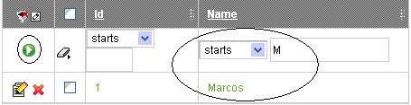
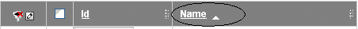
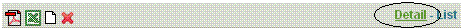
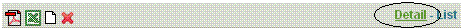
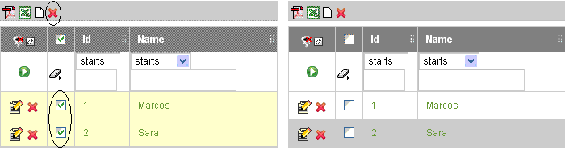
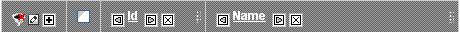
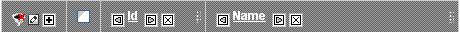
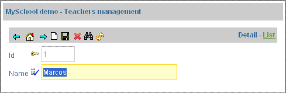

Help for Users
List mode

This mode allows users to:
- Filter by any columns or a combination of them: you put the values in the columns and after you click on icon
 .
.
 - Generate reports: with the icons
 ó
ó  it will make a report (format PDF or Excel) with the records displayed on screen. ote that these actions are executed in a browser pop-up. If your browser is configured to block pop-ups, you must add the hostname of your OpenXava instance to your browser's list of pop-up exceptions, otherwise the actions will not execute.
it will make a report (format PDF or Excel) with the records displayed on screen. ote that these actions are executed in a browser pop-up. If your browser is configured to block pop-ups, you must add the hostname of your OpenXava instance to your browser's list of pop-up exceptions, otherwise the actions will not execute. - Order by any column: clicking on its header

Ascending order (first time) or descending order (second time). - Edit a record: you can edit when: clicking on any part of the row, clicking on icon
 or clicking on detail link 
or clicking on detail link  - Delete record: clicking on icon
 . You can delete several records or only one record:
. You can delete several records or only one record:
 - Customize the list: clicking on icon
 , you can add, remove or move columns:
, you can add, remove or move columns:
With the icons and
and  , you can move the columns; with you remove a column from the list; and
, you can move the columns; with you remove a column from the list; and
clicking on display a list whit all the columns:

you selected the columns to add, after you click on 'Add columns to list'.
Detail mode
This mode allows user to:
- Navigation between records in the list: with icons
 , you can see the first record, or you can go to the previous record or the last record.
, you can see the first record, or you can go to the previous record or the last record. - Save a new record: first clicking on icon
 to go a new record, after you fill the form and then you click on icon
to go a new record, after you fill the form and then you click on icon  .
. - Remove record: clicking on you can delete the display record.
- Search a record: clicking on icon
 , it show a dialog to put the information to search:
, it show a dialog to put the information to search:

- Refresh screen: refresh the information in the screen.